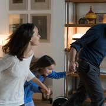

After love
After 15 years of marriage, a couple with two kids is about to divorce.
Until the husband find a new place to live, they have to cohabit, and
figure out how to share their belongings.

Director:Joachim Lafosse
Writers: Fanny Burdino (dialogue), Fanny Burdino (screenplay)
Realease Date:18 February 2016
Language:English, Italian